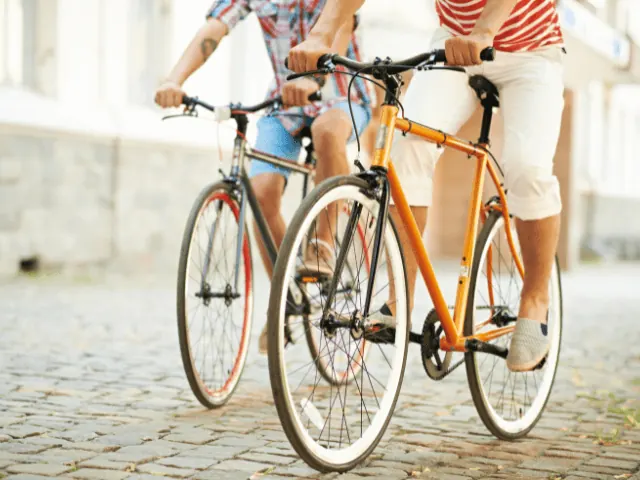
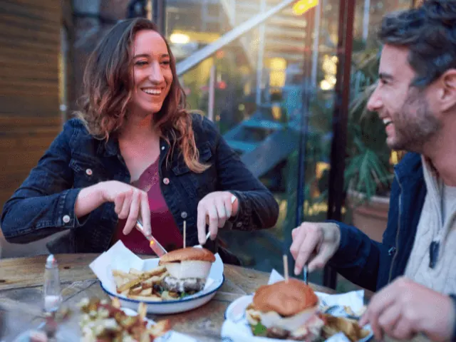

Happen & Stappen in Nijmegen – Een Wereld aan Mogelijkheden
Gepubliceerd op 8 maart 2023, bijgewerkt op 26 februari 2024
Onderdeel van de gids Restaurants in Nijmegen

Heerlijk eten bij de allerbeste restaurants, en daarnaast lekker sportief bezig zijn? Dat is het unieke concept van happen & stappen. Zo kiezen veel mensen ervoor om een prachtige wandelroute te volgen die vervolgens eindigt bij een heerlijke eetgelegenheid. Maar ook fietsroutes en andere sportieve activiteiten kunnen worden uitgevoerd. In Nijmegen is er genoeg te beleven, en het is dan ook bij uitstek een fantastische locatie voor een dagje happen en stappen.
Ben jij graag sportief bezig, maar houd je ook van lekker eten? Probeer dan een Hap & Stap tour door Nijmegen. Hiermee loop je door de prachtige oude stad terwijl je geniet van heerlijke eetgelegenheden die deze plaats rijk is. Voor de avonturier raden wij de Escape Dinner Game aan. Een escape room en driegangenmenu in één!
Ben jij op zoek naar een gezellige vorm van happen en stappen in Nijmegen? Dan ben je bij ons aan het juiste adres. In het onderstaande artikel geven we jou enkele ideeën ter inspiratie. Welke activiteit combineer jij met een bezoekje aan je favoriete restaurant? In Nijmegen is er in ieder geval meer dan voldoende keuze. Laten we dus eens gaan kijken welke vorm van eten en bewegen het beste aansluit bij jouw persoonlijke voorkeuren.
Op sportieve doch culinaire ontdekkingsreis in Nijmegen
Alhoewel jij natuurlijk zelf een gezellig dagje happen en stappen kunt organiseren, zijn er ook diverse activiteiten die reeds inclusief diner geboekt kunnen worden. Hier vind je simpelweg alles onder één dak. Dit scheelt jou een hoop organisatie, en het belooft hoe dan ook een feestje te worden. Neem de onderstaande activiteiten in overweging wanneer je op zoek bent naar een gezellige groepsactiviteit.
– Walking dinner Nijmegen
Staat een bezoekje aan de prachtige stad Nijmegen hoog op jouw verlanglijstje? Dan ben je ongetwijfeld geïnteresseerd in een culinaire stadswandeling. In dat geval mag een Walking dinner niet ontbreken op jouw bucketlist. Deze staat ook wel bekend als de Hap & Stap Tour door Nijmegen.
Specialtours biedt een veelzijdig Walking dinner aan in samenwerking met de beste restaurants in Nijmegen. Laat je door een gids rondleiden door deze prachtige oude stad, en combineer dit met bezoekjes aan verschillende restaurants. Nijmegen staat bekend om een divers landschap waar veel moois te zien is. Hier zul jij snel genoeg achter komen tijdens deze sportieve activiteit.
Wandelen en dineren wordt afgewisseld tijdens de Walking dinners van Specialtours. Het is een fantastische activiteit om met vrienden en familie uit te voeren, maar ook zeer geschikt als bijvoorbeeld bedrijfsuitje.

– Happen en Trappen Nijmegen
Ben jij een fanatiek fietser? Dan is een Happen en Trappen route echt iets voor jou! Al fietsend laat jij je betoveren door de prachtige natuur van Nijmegen. Landschappen met heuvels, dalen en uitgestrekte bossen, dat wordt absoluut genieten.
Tijdens het fietsen kom je de meest unieke plekjes van Nijmegen tegen. De populaire bezienswaardigheden van deze oude stad ontbreken uiteraard niet op de route. Tussendoor kun je weer op krachten komen door een heerlijke maaltijd te nuttigen. Onderstaand enkele populaire restaurants die deelnemen aan dit unieke concept.
- De Wolfsberg
- Café Eten en Drinken
- De Heeren van Berg en Dal
- ‘t Zwaantje
Dit zijn stuk voor stuk hooggewaardeerde eetgelegenheden, waar jij kunt genieten van een heerlijke maaltijd. Doe je dit alleen, met je partner of wellicht met een hele groep? De mogelijkheden zijn eindeloos!

– Escape Dinner Game Nijmegen
Je bent ongetwijfeld bekend met escape rooms. Het is een groepsactiviteit die in de afgelopen jaren razend populair is geworden. Door middel van cryptische aanwijzingen en mysterieuze tips moet je een weg zien te vinden uit de escape room. Dit concept kan ook gecombineerd worden met een heerlijke maaltijd, dit is dan ook precies waar de Escape Dinner Game op gebaseerd is.
Het is een zenuwslopend spel voor gezelschappen vanaf tien personen. Ideaal dus als bedrijfsuitje of familiefeest. Tijdens de Escape Dinner Game moeten jij en je teamleden ervoor zorgen dat het mysterie zo snel mogelijk wordt opgelost. Op een lege maag kun je echter niet goed nadenken. Een uniek driegangendiner is dus ook onderdeel van deze bijzondere activiteit.
Je kunt een Escape Dinner Game in Nijmegen al boeken vanaf €49,65 per persoon. De activiteit duurt 3,5 uur. Het eten en het puzzelen in de escape room worden per gang afgewisseld. Dit zorgt voor variatie en een hoop gezelligheid.
Heb jij nog niet eerder een Escape Dinner Game meegemaakt? Geen paniek. Er zijn professionele begeleiders aanwezig die het spel haarfijn uitleggen. Hierna weten jij en je vrienden precies wat jullie te doen staat.